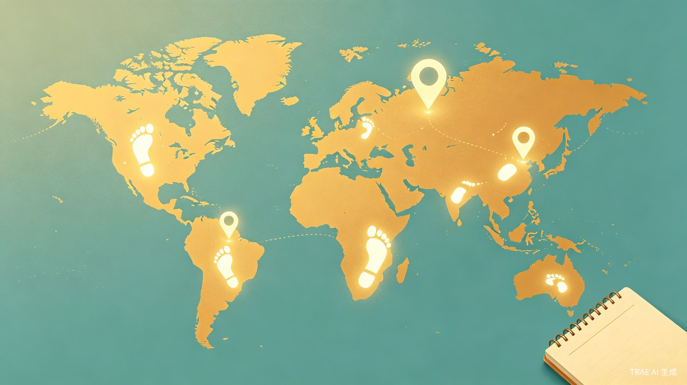

在地图上，写下你的人生足迹
TRAE AI 创造力大赛 · 生活娱乐赛道绘世手账——以地图为画布，以足迹为笔墨，绘制属于你的世界。
帮助用户记录自己去过的每一个地方——旅行目的地、常去的咖啡馆、偶然发现的小巷。通过在地图上标记足迹、上传照片和手账笔记，让用户像"解锁地图"一样回顾自己的人生轨迹，获得记录与回顾的情绪价值。同时提供数据统计能力，让用户清晰了解自己的出行频率、偏好区域等个人数据。
市面上现有的地图标记类工具要么功能过于简单，只能打卡留个点；要么像旅行日记App那样功能臃肿，编辑流程复杂，用户记录成本很高。我想要一款"轻记录、重回顾"的产品——打开就能快速标记，回头翻看时又有满满的仪式感。手账的加入让记录不只是冰冷的数据点，而是带有温度的个人记忆。
一款以地图为核心交互界面的生活记录App，支持照片、评分、日期、手账文字等多维度记录，并提供足迹统计、记录管理（增删查改）等功能。
喜欢探索新地点的年轻用户（18-35岁），渴望记录每一次出发与抵达
有记录习惯、喜欢写手账或拍照留念的用户，注重生活中的仪式感
想要回顾和整理自己人生足迹的用户，希望看到时间沉淀后的地图
对个人出行数据感兴趣，想了解自己"去过哪里、常去哪里"的用户
"绘世手账"的核心价值在于让记录变得有意义。每标记一个地点，地图上就多一个属于你的"脚印"——这种"解锁世界"的体验能带来持续的成就感和满足感。配合照片和手账文字，用户在回顾时能重新感受到当时的情绪和故事，而不仅仅是看一组坐标数据。
这种"轻记录、重回顾"的设计理念，让用户以最低的成本留住最珍贵的记忆。
相比现有工具，绘世手账聚焦于"标记-记录-回顾"这一核心链路，砍掉不必要的功能模块。用户打开App → 选地点 → 拍照/写几句 → 保存，整个过程在30秒内完成。
同时提供清晰的数据统计面板，让用户一目了然地了解自己的出行概况，无需手动整理。